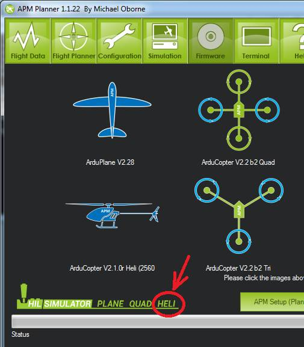

Archived:Traditional Helicopter Simulator - TradHeliHIL¶
Warning
ARCHIVED ARTICLE
This Simulator does not currently work (16 Feb 2015).
This article explains how to setup the TradHelicopter in the mission planner.
What you need¶
AeroSIM-RC 3.7 http://www.aerosimrc.com/j/index.php/en/downloads. Note: As of Feb 20th 2012, you need to use the beta version of 3.83 which can be found here.
In your AP Mission Planner installation directory you will find a file called AeroSIMRCAPMHIL.zip. Extract this to your AeroSIM-RC plug-ins directory (i.e. C:Program Files (x86)AeroSIM-RCplugin)
How to make it work¶
Upload the Copter firmware using the Mission Planner.
On the AP Mission Planner you can find the Heli button on the bottom left of the firmware upload screen.
{kind=link}
If you use Arduino be sure to set the following definitions in APM_Config.h:*
#define HIL_MODE HIL_MODE_ATTITUDE #define FRAME_CONFIG HELI_FRAME
Start the AP Mission Planner and perform the following set-up:
select Simulation from the Menu
check AeroSimRC
check Heli
check Reverse Rudder and Display All
set Roll gain = 4500
set Pitch gain = 4500
set Throttle gain = 4500
set Rudder gain = 300
select Save Settings so that you don’t need to this next time
connect your APM to you PC through the USB port
ensure the COM port and baud is correct in the APMissionPlanner and push the Connect button
push SimLink Start/Stop button, you should see “Sim Link Started”
{kind=link}
Start AeroSIM-RC and perform the following setup
select SIM, Select Model, Heli 30 from the menu
select plug-ins, APM from the menu
you should find the engines in the RC helicopter immediately start and that you are able to control the RC heli much like the real helicopter
{kind=link}